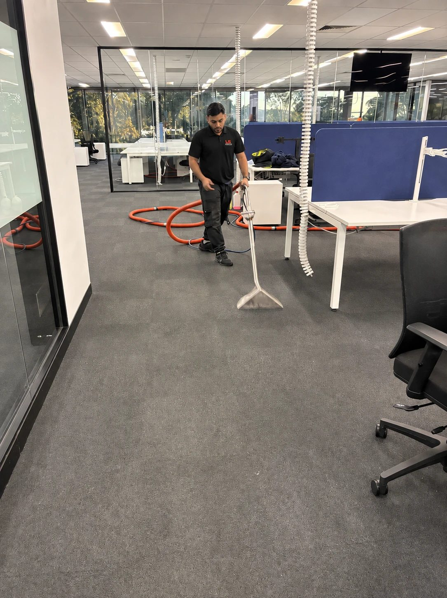
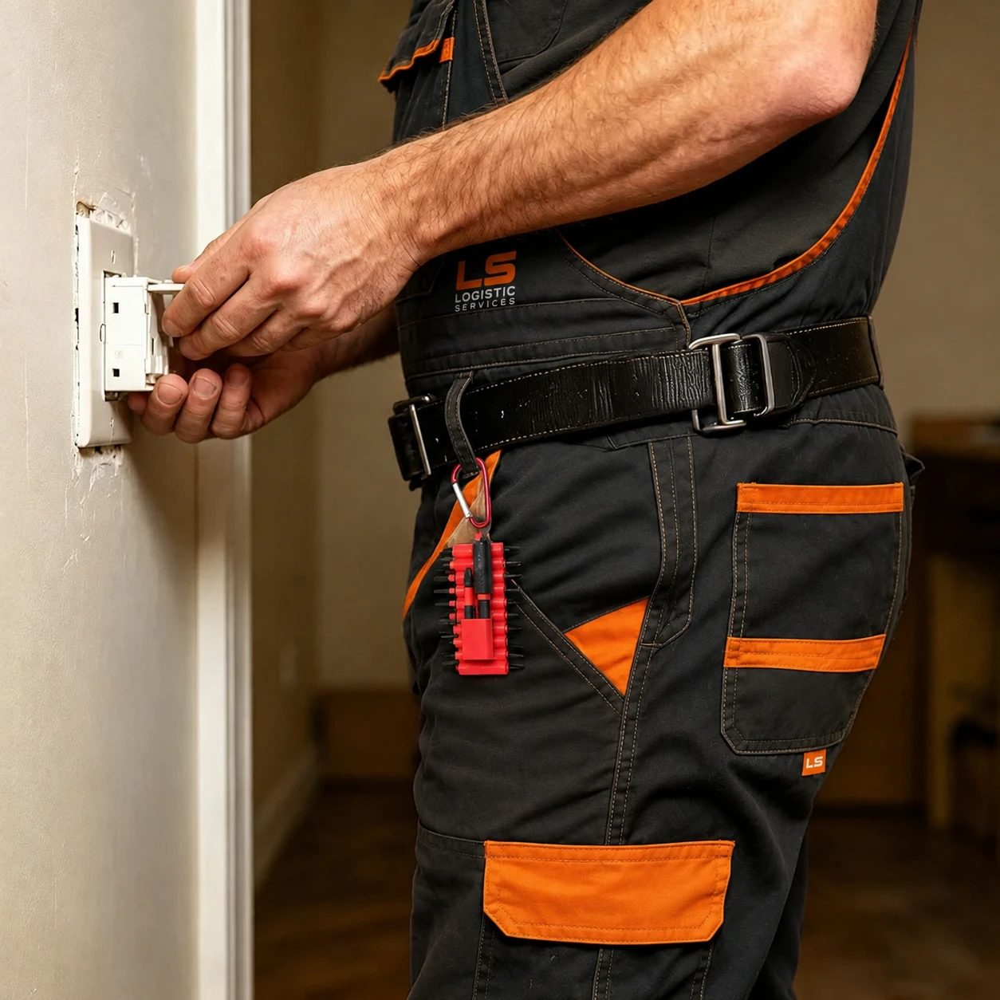
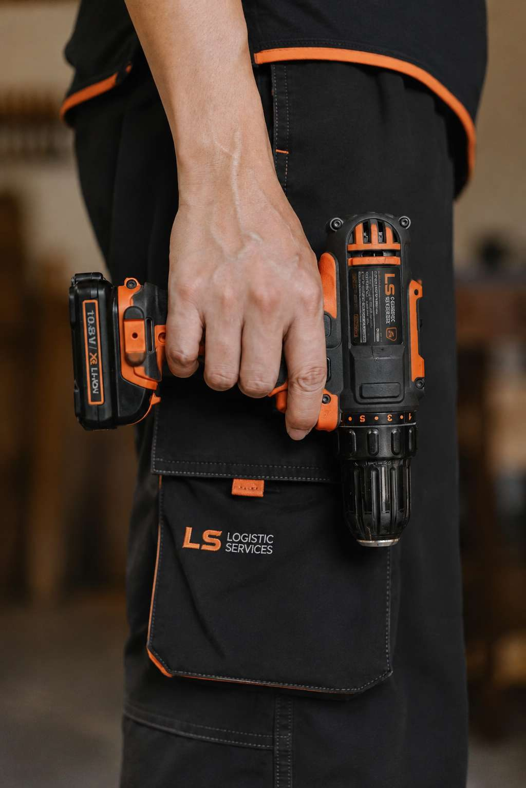
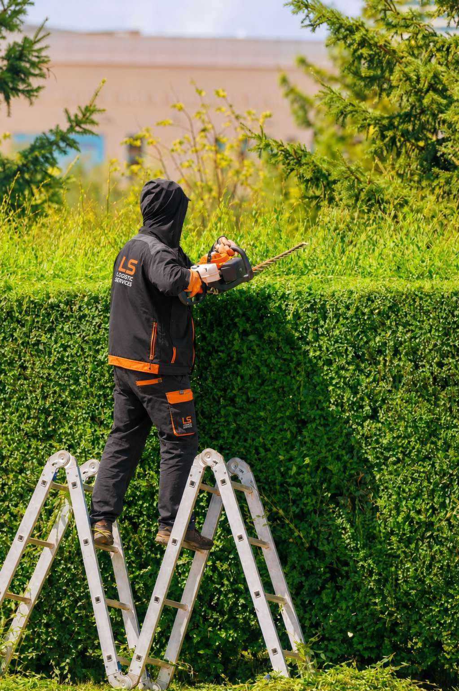

Un service impeccable, du premier appel à la dernière finition.
LS Logistic Services entretient et embellit vos locaux professionnels, copropriétés et extérieurs, avec la rigueur d'une équipe formée en interne.
Sept métiers, une seule équipe pour s'occuper de tout
Cliquez sur un service pour découvrir le détail de la prestation et demander un devis en quelques secondes.

NettoyageBureaux & locaux professionnels
Un cadre de travail impeccable, du hall d'accueil aux sanitaires, sur mesure selon votre activité.
 Nettoyage
Nettoyage
Copropriétés & parties communes
Entretien régulier des halls, escaliers et abords, pour des résidents et des syndics sereins.
Fin de chantier
Un chantier livré propre et prêt à vivre, poussière et résidus éliminés jusqu'au moindre recoin.

BricolagePetits travaux & réparations
Fixations, réparations, finitions. Les travaux du quotidien pris en charge sans attendre.

BricolageMontage & installation
Mobilier, équipements, agencements. Un montage soigné, sans rayure ni pièce oubliée.
Entretien d'espaces verts
Tonte, taille, désherbage. Des extérieurs entretenus toute l'année, au rythme qui vous convient.

JardinageAménagement paysager
Conception et création d'espaces verts qui valorisent durablement votre site ou votre bien.
Une exigence de qualité que l'on ressent dès la première visite
Ces principes guident chaque intervention, qu'il s'agisse d'un bureau de dix personnes ou d'un site industriel complet.
Excellence & qualité
Chaque prestation est exécutée avec le même niveau d'exigence, du premier au dernier passage.
Rigueur & sérieux
Des protocoles précis et un suivi méthodique pour un résultat constant, sans approximation.
Professionnalisme
Une équipe formée, ponctuelle et respectueuse de vos espaces comme de vos horaires.
Écoute
Votre besoin façonne notre intervention. Nous nous adaptons, pas l'inverse.
Engagement
Un seul interlocuteur, du devis à la clôture de l'intervention, disponible à chaque étape.
Quatre étapes, sans complexité inutile
Vous décrivez votre besoin
Un appel ou le formulaire en ligne suffisent pour démarrer, quel que soit le service.
Nous établissons un devis clair
Détail des prestations, fréquence et tarif, sans surprise ni engagement de votre part.
Une équipe dédiée intervient
Le même interlocuteur suit votre dossier du premier jour au dernier.
Nous vérifions la qualité
Un contrôle systématique avant chaque clôture d'intervention, sans exception.
Un seul interlocuteur pour vos espaces, à l'intérieur comme à l'extérieur
LS Logistic Services réunit sous une même équipe le nettoyage, les petits travaux et l'entretien des extérieurs. Une organisation qui s'adapte à votre calendrier plutôt que l'inverse.
Prêt à confier vos espaces à une équipe rigoureuse ?
Décrivez votre besoin en deux minutes. Nous revenons vers vous avec un devis clair sous 24h.